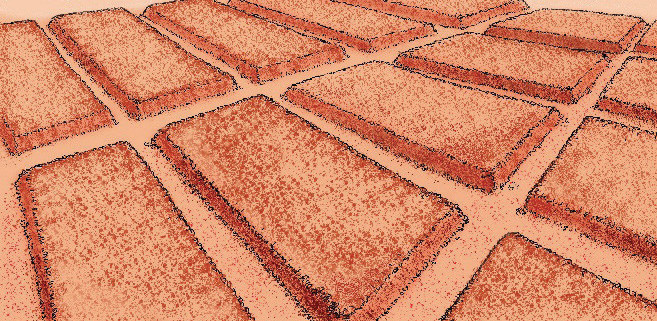
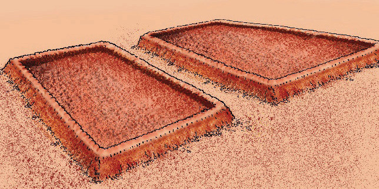

Site selection and land preparation for vegetable farming
Site selection involves choosing a location that is suitable for growing the type of vegetables you want to cultivate. Factors to consider include all factors you have already considered in the planning section. Some of the important factors include soil type, climate and availability of water and market. The next step is to prepare the land for planting. This involves several steps such as clearing the land and preparing the soil by turning it over to break it up and make it easier for the roots of the vegetables to grow. It also involves adding organic manure such as compost or farm yard manure to the soil.
Types of seedbeds commonly used for vegetable farming
Depending on the production season, type of irrigation and the field condition, three types of seedbeds are commonly used in vegetable production. These are raised seedbed, sunken seedbed, and flat seedbed.
Raised beds:
Raised beds are great for clayey soils or areas with poor drainage. They are also useful for irrigated crops where water flows down the furrows between them. They are usually 100 cm wide and 10 - 30 cm high, but the best height depends on the soil texture and moisture. They can be made with hand tools in small to medium farms and machines in large farms. The advantages of raised beds are better drainage and easier access for hand operations such as weeding. Figures 4.1 (a) and (b) show examples of raised beds. The beds in Figure 4.1 (a) are best suited to high-rainfall areas. The beds in Figure 4.1 (b) have a lip around all four sides which helps to prevent water from running off, especially in drier conditions.


Sunken beds:
They are about 100 cm wide and are made by removing the soil at 10 - 20 cm below the surrounding soil level. This makes them great for conserving water, as they don’t have exposed sides where moisture can be lost. They are often used in